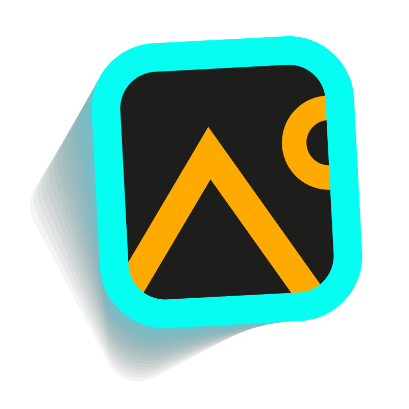

Portfólio em movimento
Sua obra. Seu olhar. Agora em movimento.
Transforme ilustrações, fotos e outras obras prontas em conteúdo em movimento. Escolha o que mostrar, por onde o olhar passa e onde ele faz uma pausa.
Movimento reduzido está ativo no seu aparelho: nada começa sozinho. Use o botão de reproduzir quando quiser.
Estudo conceitual de movimento de câmera sobre uma ilustração.
Exemplos
Veja o que seu portfólio pode mostrar.
Explore como um movimento revela detalhes em ilustrações, fotos e outros trabalhos visuais.
Galeria de estudos de movimento.
Por que eu criei o Arco Motion
Eu queria mostrar minhas ilustrações em movimento nas redes sociais. Queria escolher por onde a câmera passa, de que detalhe ela se aproxima e onde para um pouco. As ferramentas que encontrei eram complicadas demais pro que eu queria fazer ou limitadas demais pra me dar esse controle. Aí resolvi criar a minha.
O movimento segue o seu olhar.
Escolha os enquadramentos, desenhe o percurso, ajuste o ritmo e as pausas. Use camadas e parallax para dar profundidade à cena.
Lançamento
Seu portfólio merece um olhar cinematográfico.
Escolha como você quer acompanhar o Arco Motion.
